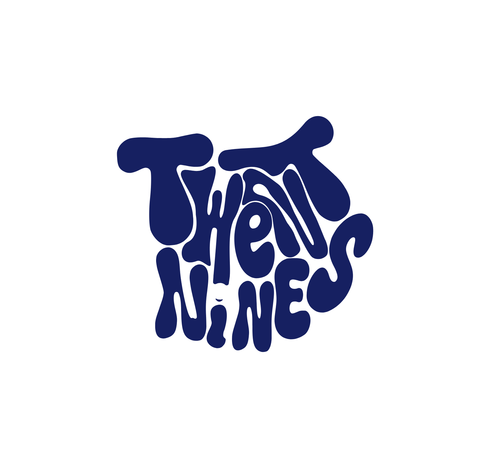

"Este manual no es solo teoría; es el encendido de mi propio bombillo.
Porque para brillar, primero hay que entender la luz."
Módulo I
El vocabulario silencioso de mi marca — preguntas 1, 9, 13
El azul está intrínsecamente ligado a la mente. Transmite serenidad, inteligencia, lealtad y, sobre todo, confianza y comunicación clara. Es el color de la tecnología y el flujo de información.
Al usar variaciones de un solo tono — desde un azul marino profundo hasta un celeste casi blanco — elimino el ruido visual y el caos. El monocromatismo demuestra disciplina, madurez visual y sofisticación.
"Para mí, el color es el primer filtro de la realidad."
Azul marino aplicado en tipografías principales y titulares. Sustituye al negro puro haciendo la lectura más amable pero igualmente formal.
Para llamados a la acción (botones, hipervínculos) y elementos gráficos que deben destacar y guiar el ojo del usuario dentro de la composición.
Funcionan como fondos o "espacios en blanco" dentro de la diagramación. Aportan respiro para que el mensaje se lea con claridad y sin saturación.
Contraste, Equilibrio, Espacio en Blanco y Jerarquía Visual — las reglas del juego para que un mensaje no sea solo estético, sino funcional.
Módulo II
Comunicación estratégica, publicidad y mercado — preguntas 2, 2.1, 4, 5, 3
El mercado no es un gráfico económico — es un ecosistema vivo de conversaciones y necesidades. Un grupo de personas buscando marcas que resuelvan sus problemas, los entretengan o los representen.
Y el producto: el vehículo físico o digital que entrega una experiencia. En branding gastronómico, el "producto" incluye el diseño del menú, la rotulación del camión y el empaque que el cliente lleva a casa.
Un error común es creer que la publicidad empieza abriendo el programa de diseño.
Entender qué necesita el cliente, quién es el target y cuál es el objetivo — ¿Vender? ¿Generar reconocimiento? ¿Informar?
Definir "qué vamos a decir" antes de decidir "cómo se va a ver". El mensaje primero, el diseño después.
Adaptar el mensaje al medio. No es lo mismo diagramar un arte cuadrado para el feed que un guion para un video vertical de 15 segundos en Reels.
Crear piezas visuales sin elementos que distraigan. La publicidad efectiva es clara; cualquier adorno innecesario debe ser eliminado para proteger el mensaje principal.
Módulo III
Identidad gráfica, síntesis visual y promesa de marca — preguntas 6, 7, 8
¿Cuáles son sus valores y su misión? No se diseña igual para un estudio de arquitectura con líneas rígidas que para una marca de comida urbana con estética orgánica.
Brand Accuracy: al componer, elimino cualquier elemento visual extraño. Si un elemento no comunica, distrae. La precisión mantiene la coherencia de la marca.
La identidad debe ser un manual de reglas claras que permita a la marca expandirse a uniformes, papelería o campañas digitales sin perder su ADN.
En su forma más pura, un símbolo es la síntesis gráfica de un concepto complejo. Existe para ser decodificado en fracciones de segundo, saltándose la barrera del lenguaje escrito.
Un símbolo eficiente debe ser escalable: funcionar y entenderse con la misma claridad tanto en la fachada de un local como en el pequeño avatar de una red social.
El logotipo representa un contrato visual y una promesa de calidad. Es la huella digital en la mente del consumidor — el ancla de la memoria.
"Si está bien construido, la gente recordará cómo los hiciste sentir con solo ver esa forma."
Módulo IV
Herramientas, experiencia y visión a futuro — preguntas 10, 14, 11, 12, 15
A mitad de la carrera, mi experiencia se ha alejado bastante de la simple teoría; he buscado ensuciarme las manos en la práctica real. Ser estudiante de Comunicación Social me ha dado el criterio, pero la calle y el trabajo como Community Manager me han dado el pulso del mercado.
La efectividad de un mensaje no depende de qué tan fuerte se grite, sino de qué tan bien esté codificado. El lenguaje visual y el verbal deben contar exactamente la misma historia.
Un mensaje efectivo se adapta a su entorno — no diagramo igual un arte cuadrado para redes sociales que un guion de motion graphics para YouTube.
Lienzo principal para la creación de identidades gráficas, logotipos desde cero, vectorización y diagramación publicitaria.
Para la edición profesional de video, montaje multicámara y estructuración narrativa audiovisual.
Para llevar el diseño al siguiente nivel mediante motion graphics, animaciones de logotipos y composición visual compleja.
Al recibir mi título, me visualizo liderando mi propio estudio creativo o asumiendo la dirección de arte integral de proyectos de alto nivel — combinando diseño gráfico estructural con producción audiovisual y motion graphics.
"La comunicación visual no se sostiene solo de conceptos;
se demuestra en la ejecución.
Porque el camino más largo ya comenzó con el primer paso,
y estas son las huellas."